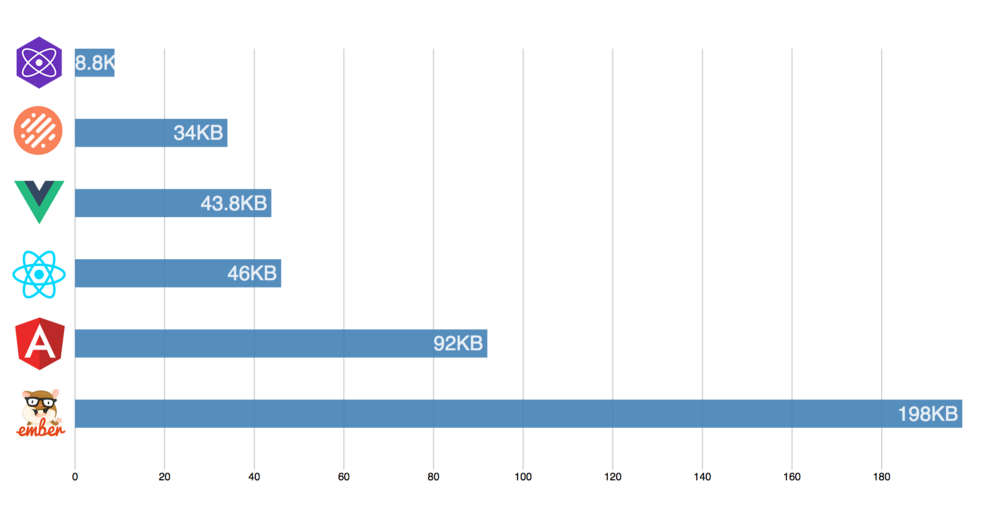

Introducting GlimmerJS
About Me
Senior Dev at Genesys

Ember Learn Team

Triangle Ember Meetup Organizer
Agenda
What is Glimmer?
Where is it Going?
Fun Examples
Live Code!
http://toddjordan.github.io/intro-to-glimmer-slidesWhat is Glimmer?
Extracted Ember's Rendering Engine
Plus Ember Component Essentials
Productive Out of the Box with Ember CLI
Web Components!
Fast
http://yehudakatz.com/2017/04/05/the-glimmer-vm-boots-fast-and-stays-fast/Small
 https://medium.com/dailyjs/javascript-framework-battle-hello-world-in-each-cli-cfdba8bf5e4bTypescript, Classes, Decorators
import Component, { tracked } from '@glimmer/component';
export default class extends Component {
@tracked firstName;
@tracked lastName;
@tracked('firstName', 'lastName')
get fullName() {
return `${this.firstName} ${this.lastName}`;
}
}
The Future
Preview Forward-Looking Features
Before They Show up in Ember
Vision
Install your way to Ember